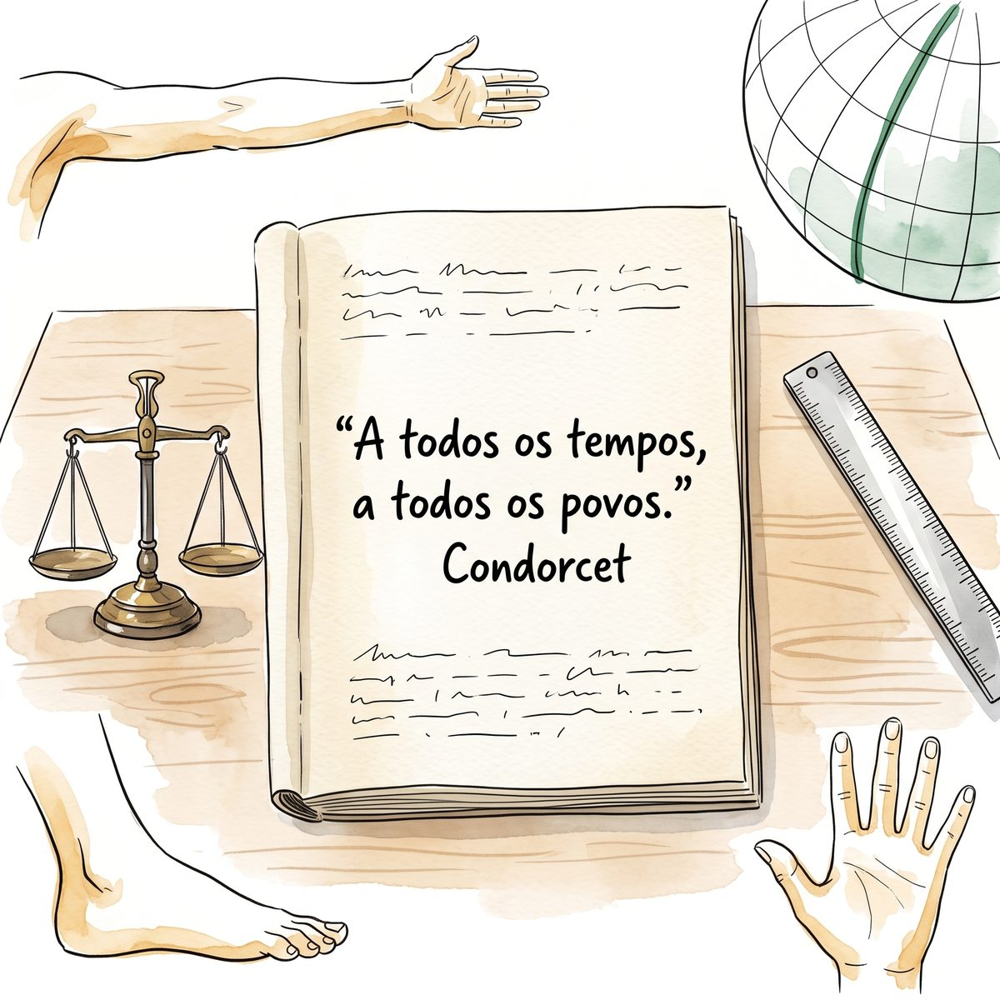

IFMG campus Ouro Preto - Coordenadoria da Área de Física (CODAFIS) - Núcleo de Inovação e Desenvolvimento de Experimentos Científicos (NIDEC) · ILB · T0B · Primeira edição · 2026
▼ role para ler
♪ Leia ouvindo — clique aqui ou na aba MÚSICA e conheça a recomendação de Piazzi.
“A todos os tempos, a todos os povos.”
— Condorcet (1743–1794)
Nicolas de Condorcet (Ribemont, 1743 — Bourg-la-Reine, 1794). Matemático e filósofo francês, relator da comissão de pesos e medidas da Revolução. A divisa foi gravada no metro-padrão depositado nos Arquivos da República em 1799: a medida deixava de pertencer a um rei, a uma região ou a um ofício, e passava a pertencer a todos — que é a única forma de ela valer fora de quem mediu.

Figura 2 — A frase de Condorcet escrita à mão na página de um caderno; ao lado, sobre a mesma mesa, uma balança de dois pratos e uma régua — o padrão antigo e o padrão de hoje.
Ato I — O Gancho
A quinze minutos a pé desta sala, na Praça Tiradentes, existe uma balança que pesou ouro. Ela está no Museu de Ciência e Técnica da Escola de Minas, e o que ela media não era grama: era oitava. Ao lado, o quilate media a pureza. Quem vendia e quem comprava precisavam confiar naquele prato — e confiavam, porque havia um padrão, guardado e conferido.
Figura 3 — Sofia, Pedro, Lucas e Barbara diante da balança de pesar ouro do Museu de Ciência e Técnica: quatro adultos olhando o instrumento que decidia negócios antes de existir o Sistema Internacional.
Sofia parou na frente dela e fez a pergunta certa: uma oitava é quanto? A resposta está numa tabela — 1 oitava ≈ 3,586 g — e é aí que a coisa fica interessante. Para responder quanto, foi preciso traduzir a oitava para outra unidade. Toda unidade só significa alguma coisa quando pode ser comparada com outra; e a comparação só é possível se houver um padrão que as duas aceitem.
Hoje esse padrão existe, é o mesmo em mais de duzentos países e se chama Sistema Internacional de Unidades (SI). Esta trilha é sobre ele. Mas não começa por ele.
Começa pela sua mão. No encontro de hoje você vai medir seis coisas em duas bancadas — a espessura de uma folha de papel, o diâmetro de uma moeda, a inclinação de uma rampa, a massa de um clipe, a força-peso sobre 100 g e o tempo de reação de um colega. Nenhuma delas é difícil. O que é difícil, e é o que esta trilha ensina, é escrever o resultado de um jeito que outra pessoa entenda exatamente o que você mediu.
Porque é isso que uma unidade faz: ela não é enfeite do número. Ela é metade do resultado.
Explore este lugar no Google Maps
Museu de Ciência e Técnica da Escola de Minas — Praça Tiradentes, Ouro Preto
Fundado em 1876 junto com a Escola de Minas, o museu guarda uma das maiores coleções de mineralogia do país — e, no que interessa a esta trilha, os instrumentos de medida de quem pesava, ensaiava e certificava o ouro. Balanças de precisão, pesos-padrão, réguas e goniômetros do século XIX: o mesmo problema de hoje, com a tecnologia de então.
Antes de 06/10, vá até lá — ou percorra a praça pelo Street View. Procure um instrumento de medida e responda a duas perguntas: que grandeza ele media e qual era a menor divisão da escala dele. São as mesmas duas perguntas que você fez ao acervo do laboratório na trilha anterior.
Cinco tópicos: primeiro a bancada, depois o sistema
Você mede, descobre que não sabe escrever o que mediu — e só então o Sistema Internacional aparece, como a resposta que já existia para o seu problema.
Tópico 1 — As duas estações: a mão antes do nome
O laboratório está montado em duas bancadas, e elas ficam de pé para o encontro seguinte, o da T01. Metade da turma começa em cada uma; na metade do tempo, troca.
Figura 4 — As duas estações prontas antes da aula: à esquerda, régua, paquímetro, transferidor e a rampa de fórmica; à direita, balança, dinamômetro, a massa de 100 g e a régua do teste de reação.
Estação A — comprimento e ângulo. Sofia e Pedro começam aqui, com três tarefas:
A espessura de uma folha de papel. Nenhuma régua tem divisão para isso. Mede-se a pilha de 100 folhas e divide-se por 100 — um truque que a metrologia usa há séculos. O resultado sai perto de 0,1 mm, e é aqui que o milímetro começa a ficar desconfortável.
O diâmetro de uma moeda. Com o paquímetro, a leitura chega ao décimo de milímetro. Duas pessoas medem a mesma moeda e obtêm 23,4 mm e 23,5 mm — guarde essa diferença: ela é o assunto inteiro da próxima trilha.
A inclinação da rampa. Uma ladeira de fórmica e um transferidor. O resultado sai em graus — e o grau, você vai descobrir no Tópico 5, não é uma unidade do SI.
Estação B — massa, força e tempo. Lucas e Barbara começam do outro lado:
A massa de um clipe. Nenhuma balança do laboratório resolve um clipe sozinho. Pesam-se vinte, divide-se por vinte: o mesmo truque da folha de papel, agora em massa.
A força-peso sobre 100 g. O dinamômetro mostra um número — e o mostrador de muitos deles ainda está graduado em kgf, que não é do SI. A força se mede em newton, e 100 g pesam cerca de 0,98 N. Massa e peso não são a mesma grandeza, e a bancada mostra isso em dois instrumentos diferentes.
O tempo de reação de um colega. Um segura a régua na vertical, o outro espera com os dedos abertos; solta-se sem avisar. A distância que a régua caiu diz o tempo. É a primeira medida indireta da disciplina: mede-se comprimento, obtém-se tempo.
A tabela é o produto do encontro. As seis medidas entram no Roteiro de Bancada (RB) numa tabela de uma coluna por tarefa — valor, unidade e instrumento. É a forma de tabela mais simples que a disciplina vai usar, e é de propósito: a partir da T01 ela ganha a coluna da repetição, depois a do par acoplado, depois a do tempo. A tabela cresce com o semestre; o hábito de preenchê-la nasce aqui.
Aplicação — prática docente. Repare no desenho da aula: duas bancadas, materiais de papelaria e nenhum equipamento caro. Uma resma de papel, moedas, clipes, uma régua e um transferidor cabem numa sacola — e numa escola sem laboratório. O que não cabe na sacola é o método, e é justamente ele que você está levando.
Tópico 2 — Por que um padrão?
Você acabou de medir com régua, paquímetro e balança. Todas as três dependem de uma coisa que ninguém no laboratório fabricou: um padrão em que todo mundo concorda.
No começo, a medida era o corpo. O pé, o palmo, a braça, o côvado. Funcionava dentro da aldeia e falhava entre aldeias — porque o pé do vizinho não é o seu. Cada região, cada ofício e às vezes cada feira tinham a sua medida, e o comércio vivia de tabelas de conversão que ninguém garantia.
Nesta cidade, isso tem endereço. O ouro extraído aqui era pesado em oitavas — e a pureza, medida em quilates. As duas ainda estão na tabela de unidades fora do SI que você vai usar no Tópico 5: 1 quilate = 2,0 × 10−4 kg. A Casa dos Contos, a poucos metros do museu, existia para pesar e registrar o quinto que ia para a Coroa: medida, imposto e Estado no mesmo gesto.
A Revolução Francesa resolve o problema de uma vez. Em 1791, a comissão de pesos e medidas propõe uma unidade que não pertença a ninguém: o metro, definido como a décima milionésima parte do quarto do meridiano terrestre. A ideia por trás da escolha é a divisa que abre este texto — a todos os tempos, a todos os povos. Não é retórica: é especificação técnica. Um padrão que dependa de um rei morre com o rei.
De lá até aqui. Em 1875 a Convenção do Metro cria o Bureau Internacional de Pesos e Medidas (BIPM); a Conferência Geral de Pesos e Medidas (CGPM) passa a decidir as definições. O Brasil é signatário, e quem cuida disso aqui é o Inmetro.
Aplicação — metrologia. O nome disso é rastreabilidade: a possibilidade de ligar a sua medida, por uma cadeia sem buracos, a um padrão reconhecido. A régua do laboratório vale porque pode ser comparada a um padrão, que se compara a outro, que termina no BIPM. Sem essa cadeia, o número que você escreveu é uma opinião.
Tópico 3 — As sete que bastam
O mundo tem um número ilimitado de grandezas. O SI se sustenta em sete, e todas as outras se constroem a partir delas.
comprimento — metro (m)
massa — kilograma (kg)
tempo — segundo (s)
corrente elétrica — ampere (A)
temperatura termodinâmica — kelvin (K)
quantidade de substância — mol (mol)
intensidade luminosa — candela (cd)
Na bancada de hoje você usou três delas — comprimento, massa e tempo. As outras quatro entram nas disciplinas seguintes, e a lista não cresce: são sete desde sempre, e nenhuma nova foi acrescentada.
Figura 5 — As sete unidades de base do SI, cada uma com o seu símbolo — e as três que a bancada de hoje usou, destacadas.
A revolução de 2019. Até pouco tempo atrás, o kilograma era um objeto: um cilindro de platina e irídio guardado num cofre em Sèvres, na França, desde 1889. Todas as balanças do mundo dependiam, no fim da cadeia, daquele cilindro — que perdia massa, muito pouco, mas perdia. Em 20 de maio de 2019 isso acabou: o kilograma passou a ser definido pela constante de Planck, um número da natureza que não enferruja nem viaja de avião. As quatro unidades que ainda dependiam de objetos ou de convenções — kilograma, ampere, kelvin e mol — foram redefinidas por constantes.
Hoje, qualquer laboratório suficientemente bom pode realizar o kilograma sem pedir nada a Sèvres. O padrão deixou de ser uma coisa e passou a ser uma lei.
Aplicação — prática docente. Guarde esta como pergunta de aula: por que trocar um cilindro que funcionava por uma constante? A resposta ensina mais sobre ciência do que a definição em si — porque ela é sobre confiança, não sobre precisão. O cilindro funcionava; o que ele não podia oferecer era a garantia de continuar igual.
Tópico 4 — Quando uma unidade não basta
Sete unidades não descrevem o mundo sozinhas. Falta a área da bancada, a velocidade do carrinho, a densidade do cilindro, a força que você mediu com o dinamômetro.
As unidades derivadas nascem das de base por multiplicação e divisão — e algumas ganham nome próprio:
área — metro quadrado (m2); volume — metro cúbico (m3)
velocidade — metro por segundo (m/s); aceleração — metro por segundo ao quadrado (m/s2)
força — newton (N), que é m·kg·s−2; energia e trabalho — joule (J), que é N·m
pressão — pascal (Pa), que é N/m2; densidade — kilograma por metro cúbico (kg/m3)
O newton do seu dinamômetro é o exemplo à mão: por trás do nome curto está uma combinação de três unidades de base. Escrever N é escrever m·kg·s−2 com menos tinta.
Os prefixos resolvem a escala. A espessura da folha de papel deu por volta de 0,1 mm. Escrito assim, o número tem um zero à esquerda que não diz nada. Em micrometros — 100 µm — ele fica na escala certa: sem zeros de enfeite e sem notação científica. É para isso que servem os prefixos, de yocto (10−24) a yotta (1024), todos decimais.
Quadro 1 — Prefixos que você usa quase todo dia
Prefixo
Símbolo
Fator
kilo
k
103 1 km = 1 000 m
centi
c
10−2 1 cm = 0,01 m
mili
m
10−3 1 mm = 0,001 m
micro
µ
10−6 1 µm = 0,000 001 m
mega
M
106 1 MPa = 1 000 000 Pa
A regra de escolha, que vale para o resto do curso: use o prefixo que deixa o número entre 0,1 e 1 000. Não é estética — é redução de erro. Número com muitos zeros é número que se copia errado.
Uma armadilha só do kilograma. Ele é a única unidade de base que já nasce com prefixo. Por isso os múltiplos e submúltiplos se formam sobre o grama, não sobre o kilograma: escreve-se miligrama (mg), nunca “microkilograma”.
Aplicação — metrologia. O prefixo não muda a medida, muda a escrita dela. 0,000 1 m, 0,1 mm e 100 µm são exatamente a mesma coisa — e a terceira é a única que se lê sem contar zeros.
Tópico 5 — A grafia é parte da medida
Aqui está o tópico que a T01 vai exigir pronto na semana que vem, e o motivo pelo qual esta trilha existe.
O símbolo não é abreviação. Abreviação é economia de escrita e admite variação; símbolo é notação internacional e não admite nenhuma. Daí as regras:
Não tem plural: 5 kg, e nunca 5 kgs.
Não tem ponto: 12 s, e nunca 12 seg.
Não vira maiúscula: 1,6 cm, e nunca 1,6 CM. Maiúscula só quando o símbolo é assim — N de newton, Pa de pascal, A de ampere — porque a unidade tem nome de pessoa.
Tem espaço: 23,5 mm, e não 23,5mm.
A vírgula é decimal: 23,5 mm em português; o ponto é dos textos em inglês.
A grafia dos nomes formados por prefixo. Esta disciplina segue a regra de formação do SI, e ela prevalece sobre a regra gramatical do português: centimetro, kilograma, kilometro, milisegundo — prefixo mais unidade, sem acento e sem duplicar consoante. Não é descuido de digitação: é a grafia técnica, e ela vale em todo material desta disciplina, do Roteiro de Bancada ao relatório.
Figura 6 — As mesmas seis medidas da bancada escritas duas vezes: à esquerda como se costuma escrever, à direita como o SI exige — e o que mudou em cada linha.
As unidades fora do SI que a vida usa. Minuto, hora, dia, grau, polegada, litro, tonelada, quilate, kgf, km/h, cavalo-vapor: todas são de uso corrente e nenhuma é do SI. Elas não estão proibidas — estão tabeladas, com o fator de conversão de cada uma. O grau que você mediu na rampa se converte por 1° = π/180 rad; o kgf do dinamômetro, por 1 kgf = 9,81 N; a hora, por 1 h = 3,6 × 103 s.
A regra prática do relatório: mede-se no instrumento que existe, relata-se na unidade do SI, com a conversão à vista.
Aplicação — prática docente. Esta é a parte do conteúdo que uma turma de ensino médio acha chata — e que fica interessante quando se mostra o custo do erro. Em 1999 a NASA perdeu a sonda Mars Climate Orbiter, de 125 milhões de dólares, porque uma equipe entregou dados em libra-força-segundo e a outra leu como newton-segundo. A sonda entrou baixo demais na atmosfera de Marte e se desfez. Nenhum dos dois lados errou a conta.
Aplicação — história e metrologia. O vocabulário desta trilha — unidade, padrão, rastreabilidade, resolução — é o da Metrologia, e está fixado num documento internacional, o VIM (Vocabulário Internacional de Metrologia), publicado no Brasil pelo Inmetro.
Ato III — O Fechamento
Medidas produzem conhecimento. Esta é a frase que fecha a trilha, e ela é mais forte do que parece. A medida não descreve um mundo que já estava lá, esperando: ela produz o que se pode dizer sobre ele. Uma grandeza que ninguém sabe medir é uma grandeza sobre a qual não se pode decidir nada — nem em ciência, nem em engenharia, nem em política pública.
Hoje você mediu seis coisas pequenas e aprendeu a escrevê-las. Parece pouco. Mas repare no que já mudou: quando alguém disser “a folha tem 0,1 de espessura”, você vai perguntar 0,1 o quê. Quando um mostrador disser kgf, você vai saber que aquilo não é newton. Quando vir 12 SEG escrito num quadro, vai saber que está errado — e por quê.
O que vem na T01. Duas pessoas mediram a mesma moeda e acharam 23,4 mm e 23,5 mm. Nesta trilha nós deixamos essa diferença de lado. Na próxima, ela é o assunto: toda medida é um número e uma dúvida, e existe uma forma correta de escrever as duas juntas. As bancadas continuam montadas; muda o que se pergunta a elas.
Figura 7 — Sofia, Pedro, Lucas e Barbara saem do laboratório com o Roteiro de Bancada preenchido; na porta, o cartaz com os erros de escrita que a turma corrigiu na lousa.
Ciência e Arte
Sistema de proporções:Le Modulor, 1948 — Le Corbusier (1887–1965)
Em 1948, o arquiteto suíço-francês Le Corbusier publicou um sistema de proporções chamado Modulor. A ideia: tirar do corpo humano — de um homem de 1,83 m com o braço erguido — uma escala de medidas encadeadas pela razão áurea, e projetar com ela portas, degraus, tetos, móveis. Uma medida, nas palavras dele, harmônica à escala humana, aplicável universalmente.
Figura 8 — O Modulor, de Le Corbusier: a silhueta humana e a régua de proporções tirada dela.
É a mesma tensão desta trilha, e ela dá voltas. A medida começou no corpo — o pé, o palmo, a braça — e o SI a tirou de lá justamente porque o corpo varia de pessoa para pessoa. Le Corbusier faz o caminho de volta: pega a medida universal e a devolve ao corpo, agora com método, para que os prédios sirvam a quem mora neles. Não é recuo; é a mesma exigência aplicada duas vezes.
“Uma medida harmônica à escala humana, aplicável universalmente.”
— Le Modulor, Le Corbusier, 1948
Le Corbusier (La Chaux-de-Fonds, 1887 — Roquebrune-Cap-Martin, 1965). Arquiteto e urbanista. O Modulor não é uma frase dele: é a definição do próprio sistema, e por isso entra aqui assinado pela obra, não entre aspas de autor.
Condorcet quis um padrão que valesse a todos os tempos e a todos os povos; Lord Kelvin, que abre o seu Roteiro de Bancada, lembrou que quando se pode medir aquilo de que se fala, sabe-se algo sobre isso; e Le Corbusier devolveu a régua ao corpo humano. Padrão, conhecimento e escala humana — três cérebros, o mesmo gesto.
Referências — Bibliografia Básica
CAMPOS, A. A.; ALVES, E. S.; SPEZIALI, N. L. Física experimental básica na universidade. 2. ed. Belo Horizonte: Editora UFMG, 2008.
PIACENTINI, J. J. et al. Introdução ao laboratório de física. 2. ed. Florianópolis: Editora da UFSC, 2018.
SANTORO, A. et al. Estimativas e erros em experimentos de física. 2. ed. Rio de Janeiro: EdUERJ, 2013.
Referências — Bibliografia Complementar
HEWITT, P. G. Física conceitual. 12. ed. Porto Alegre: Bookman, 2015.
FEYNMAN, R. P.; LEIGHTON, R. B.; SANDS, M. L. Feynman: lições de física. Porto Alegre: Bookman, 2008. v. 1, 2 e 3.
HALLIDAY, D.; RESNICK, R.; WALKER, J. Fundamentos de física: mecânica. 10. ed. Rio de Janeiro: LTC, 2016. v. 1.
Documentos e normas
BUREAU INTERNATIONAL DES POIDS ET MESURES. Le Système international d'unités (SI). 9. ed. Sèvres: BIPM, 2019.
INMETRO. Vocabulário Internacional de Metrologia (VIM). Duque de Caxias: Inmetro, 2012.
AZEVEDO, J. C. S. O Sistema Internacional de Unidades: quadro geral de unidades para o laboratório de ensino. Ouro Preto: NIDEC/IFMG, 2026. (material da disciplina)
Epígrafes e obra citada
CONDORCET, N. Lema do sistema métrico decimal, 1791–1799.
THOMSON, William (Lord Kelvin). Popular Lectures and Addresses. London: Macmillan, 1889. v. 1, p. 73. (usada no Roteiro de Bancada desta trilha)
LE CORBUSIER. Le Modulor. Boulogne: Éditions de l'Architecture d'Aujourd'hui, 1948.
Terminamos por aqui, um abraço, e até o próximo encontro.
IFMG campus Ouro Preto - Coordenadoria da Área de Física (CODAFIS) - Núcleo de Inovação e Desenvolvimento de Experimentos Científicos (NIDEC) · Primeira edição · 2026